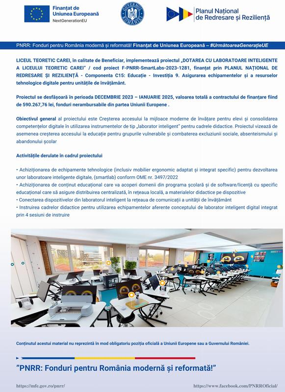

Bun venit pe pagina Liceului Teoretic din Carei !
Proiect de dezvoltare instituţională
DATE de Contact LICEUL TEORETIC CAREI
Carei, Str. Ignisului, nr. 20
Telefon 0361401282 - corp A, 0361401278 - corp E, Fax 0361401274
Email: teoretic_carei@yahoo.com
"PNRR:-Fonduri pentru România modernă și reformată!” LICEUL TEORETIC CAREI, în calitate de Beneficiar, anunță demararea proiectului „DOTAREA CU LABORATOARE INTELIGENTE A LICEULUI TEORETIC CAREI” / cod proiect F-PNRR-SmartLabs-2023-1281, proiect finanțat prin PLANUL NAȚIONAL DE REDRESARE ȘI REZILIENȚĂ Pilonul VI. detalii aici
CONCURSUL MEMORIAL "Petkes Grigore"
la cea de-a XV -a ediţie, 18 noiembrie 2023,
detalii subiecte/rezultate aici
BACALAUREAT iunie-iulie 2024
SITUAȚII DE URGENȚĂ
Februarie 2023/24
-- informări, recomandări ale autorităților despre situații de urgență --
fiipregatit.ro
Înscriere în Clasa Pregătitoare
Liceul Teoretic Carei
Anul școlar 2024-2025
Metodologie inscriere invatamant primar 2024 pentru clase pregătitoare
Calendar inscriere 2024 - Liceul Teoretic Carei pentru clase pregătitoare
Plan de scolarizare 2024-2025 Liceul Teoretic Carei pentru clase pregătitoare
circumscriptie Liceul Teoretic Carei -inscriere invatamant primar pentru clase pregătitoare
Criterii specifice de departajare
ISJ Satu Mare -informatii inscriere
părinții si copiii vor putea vizita spațiile școlare destinate grupei pregătitoare si vor putea discuta cu cadrele didactice
inscriere-invatamant-primar
site minister
POZE clase
Saptamana verde -Metodologie
EXAMEN de EVALUARE Naţională
SIMULARE 2024
ANUNȚ IMPORTANT PENTRU ELEVII CLASELOR a VIII-a
Examenul de SIMULARE Evaluare Nationala se va desfășura conform Calendarului publicat de
Minister - Metodologie EvNat 2024 + Programa
Simulare
Probe scrise
Limba și literatura română
Matematică
Limba și literatura maternă(maghiară/germană)
În fiecare zi de examen accesul în săli se face între orele 8-8,30
Sălile sunt situate în corpul A (clădirea liceului) la etajul 2 -vezi afisier curte
EXAMEN Naţional de SIMULARE BACALAUREAT
martie 2024
ANUNȚ IMPORTANT PENTRU ELEVII CLASELOR a XII-a
Examenul de SIMULARE BACALAUREAT se va desfășura conform Calendarului publicat de
Metodologie bac 2024 + Programa
Simulare
Probe scrise
a)Limba și literatura română
c)Proba de profil obligatorie(Matematică/Istorie)
d)Proba la alegere(Opțiuni din profilul clasei)
b)Limba și literatura maternă(maghiară)
În fiecare zi de examen accesul în săli se face între orele 8-8,30.
Sălile sunt situate în corpul A (clădirea liceului) la parte si etajul II -vezi afisier curte
AUTORECENZAREA - Recensământul Populației și Locuințelor formular autorecenzare
Liceul Teoretic Carei ... 32 de ani ...
După 32 de ani este firesc să facem un bilanţ statistic şi unul sentimental. Liceul a crescut ca număr de clase, de elevi, s-a extins ca spaţiu, faima a trecut dincolo de graniţele judeţului şi chiar ale ţării. Generaţii de absolvenţi au păstrat spiritul acestei şcoli în universităţile pe care le-au absolvit sau le urmează în prezent, îmbinând Binele, Frumosul şi Adevărul în manieră platoniciană, profesorii au format tineri a căror inteligenţă a fost pusă în slujba cercetării, a dorinţei permanente de autodepăşire. Olimpicii noştri, elevii cu rezultate strălucite la bacalaureate au evoluat pe mai departe, devenind azi oameni cunoscuţi şi respectaţi acolo unde lucrează. Noi nu am abdicat niciodată de la principiile consfinţite prin statutul de profesor al unui liceu de elită: seriozitate, consecvenţă, impulsionare a gândirii creative şi, mai ales, iubire. Liceul nostru este al celor buni şi foarte buni, de aceea competiţia e la înălţime.
Paginile de faţă prezintă printre altele si realizările noastre de la înfiinţarea Liceului Teoretic până în prezent.
Festivalul Intrerjudețean de Teatru pentru elevi
"Ioana Cîcu"
- ediţia a VII -a, 20 mai 2023,
pentru detalii aici

2022 februarie, ANUNȚ ANGAJARE pe baza de concurs
Anunt angajare Acte necesare Cerere de înscriere Bibliografie -Tematica
Vaccinare-ANTI COVID 19 - vaccinare-covid.gov.ro
SITUATIA procesului de vaccinare la Liceul Teoretic Carei:
72 angajati vaccinati din 114 angajati => 63% vaccinati
EVALUARE Naţională 2023
ANUNȚ IMPORTANT PENTRU ELEVII CLASELOR a VIII-a
Examenul de Evaluare Națională se va desfășura conform Calendarului publicat de MEC prin ordinul Ordinul nr. 5455 din 31.08.2020
În fiecare zi de examen accesul în săli se face între orele 8-8,30.
Sălile sunt situate în corpul A (clădirea liceului) la etajele I după cum urmează:
Etajul I Sala 1 - 9
ORDIN privind organizarea și desfășurarea Ordinul nr. 5455 din 31.08.2020
ADMITEREA în liceu - 2023
INFORMATII - metodologie admitere inv. liceal de stat
CUPA "25 Octombrie 2023"
la cea de-a 51 -a ediţie, in 21 octombrie 2022,
pentru detalii aici
CUPA "PFOENIX 2020" la cea de-a 16 -a ediţie, 6 mai 2020, pentru detalii aici
Festivalul Intrerjudețean de Teatru pentru elevi
"Ioana Cîcu"
- ediţia a VII -a, 16 mai 2020,
pentru Nu a mai fost organizat din motive de pandemie
CONCURSUL NAȚIONAL
Reflexii în oglinda istoriei Bobald - Castelul Karolyi ,
pentru detalii aici..
CONCURSUL NAȚIONAL
Cultura șvăbească sătmăreană, pentru pentru detalii aici..
Campania
TIME TO MOVE 2019- Încearcă Europa!, pentru
pentru detalii aici..
Campania
TIME TO MOVE 2018- Încearcă Europa!, pentru pentru detalii aici..

Olimpiadele Kaufland
Activităţile liceului din cadrul acestui proiect pot fi urmărite pe platforma Olimpiadele Kaufland sau aici respectiv ...
Director - prof. Zsido Sandor , Director adjunct - prof. Rodica Pop
Proiect de dezvoltare instituţională
Proiectul REGIO
În anul 2007 s-au pus bazele proiectului de Extindere şi reabilitare al Liceului Teoretic în cadrul Programului Operaţional Regional Regio sub egida Ministerului Dezvoltării Regionale şi Turismului. Valoarea proiectului este de 4.457.693,95 lei, iar perioada de implementare de 17 luni. Proiectul a fost cofinanţat de Uniunea Europeană prin Fonduri Europene de Dezvoltare Regională. în noua aripă a clădirii principale sunt 10 săli de clasă, o bibliotecă, un centru de documentare-informare şi o sală festivă.